library(ggthemes)
library(tidyverse)
library(gganimate)
#install.packages("WDI")
#install.packages("RJSONIO")
library(RJSONIO)
library(WDI)
library(readr)
#Let's see if we can find a code for export?
#library(wbstat)
#install.packages("wbstat")
#WDIsearch(string='Population, Total', field='name', cache=NULL)
#(There are also codes for Export of Goods and Services for males and females separately)
#df<-WDI( indicator=c("GDP per capita"="NY.GDP.PCAP.KD","Population, Total"="SP.POP.TOTL","Fertility"="SP.DYN.TFRT.IN"), start=1960, end=2022, extra =TRUE)
#df<-df %>% as_tibble()
#saveRDS(df, file="gdp_fertility.rds")
df_WDI<-readRDS("gdp_fertility.rds")
## Keep only countries
df_countries<-df_WDI %>% filter(region!="Aggregates")Animated graphs using R
Exploring World Development Indicators
We are using WDI data directly in R in the following chunck.
You can add options to executable code like this
## Population, GDP and fertility
df_gdp<-df_countries %>% select(iso3c, `Population, Total`, `GDP per capita`, Fertility,year, region)
df_gdp<-df_gdp %>% rename(population=`Population, Total`,GDP=`GDP per capita`)
glimpse(df_gdp)Rows: 13,454
Columns: 6
$ iso3c <chr> "AND", "AND", "AND", "AND", "AND", "AND", "AND", "AND", "AN…
$ population <dbl> 64363, 64318, 14378, 15379, 64140, 13410, 23053, 24275, 255…
$ GDP <dbl> 28701.21, 31325.64, NA, NA, 32416.14, NA, NA, 35391.21, 351…
$ Fertility <dbl> NA, NA, NA, NA, NA, NA, NA, NA, NA, NA, NA, NA, NA, NA, NA,…
$ year <int> 1996, 1997, 1961, 1962, 1998, 1960, 1969, 1970, 1971, 1972,…
$ region <chr> "Europe & Central Asia", "Europe & Central Asia", "Europe &…ggplot(df_gdp)+aes(x=population,y=GDP)+geom_point()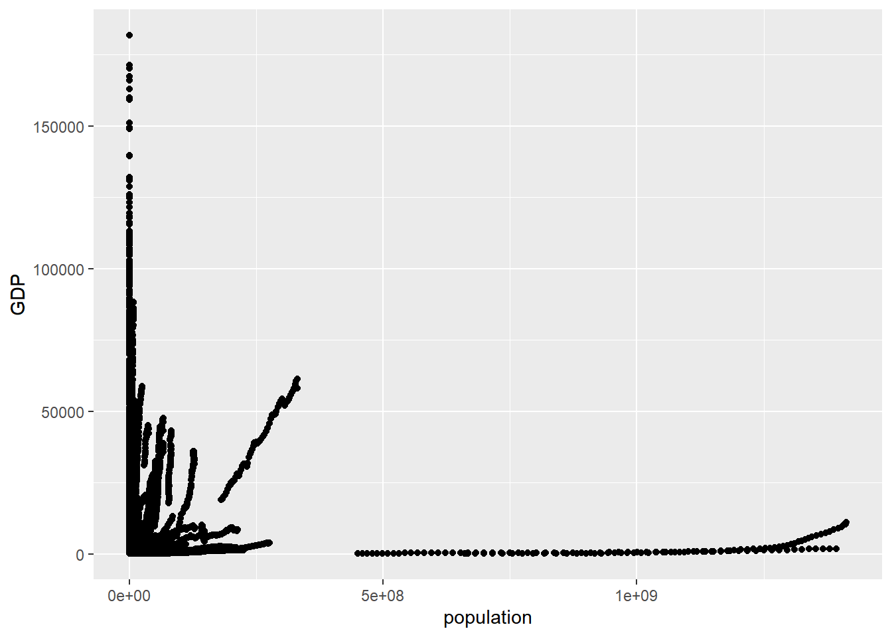
## For latest year
#| warning: false
#| message: false
df_gdp %>% filter(year==2020) %>%
ggplot()+aes(x=population,y=GDP)+geom_point()Warning: Removed 16 rows containing missing values (geom_point).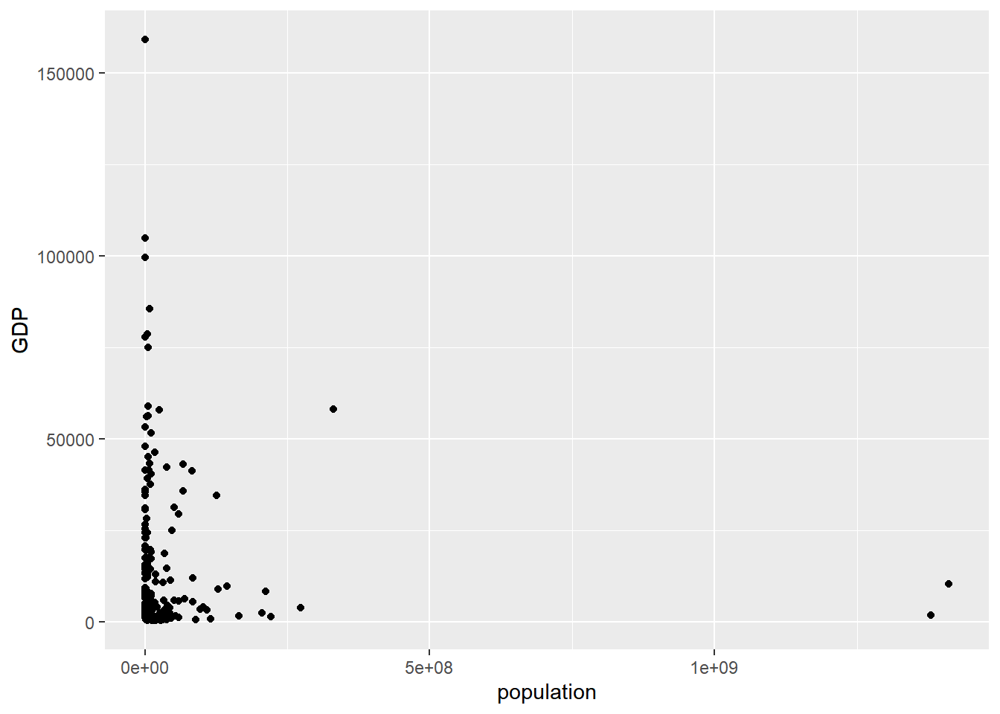
df_gdp %>% filter(year==2020) %>%
ggplot()+aes(x=log(population),y=GDP)+geom_point()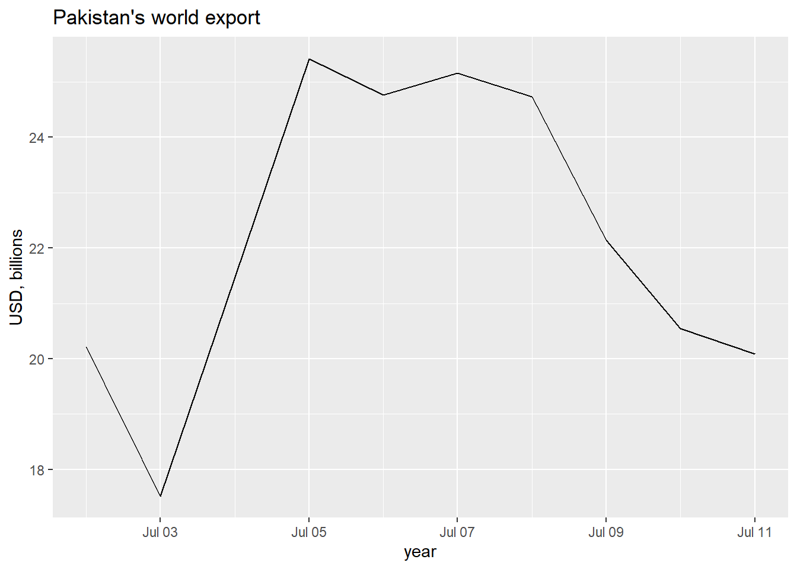
df_gdp %>% filter(year==2020) %>%
ggplot()+aes(x=GDP, Fertility)+geom_point()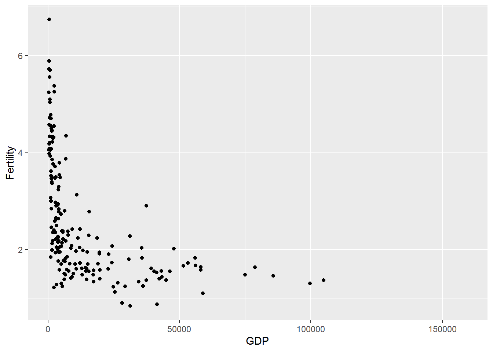
df_gdp %>% filter(year==2020) %>%
ggplot()+aes(x=GDP, Fertility)+geom_point()+geom_smooth()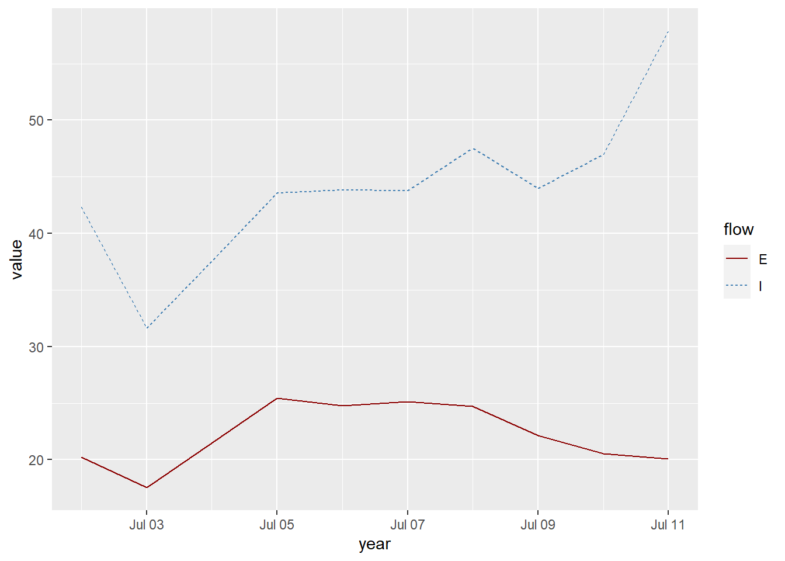
##We plot the logarithm of the GDP/capita against fertility rate in 2016 to control for skewness:
df_gdp %>% filter(year==2020) %>%
ggplot()+aes(x=log(GDP), Fertility)+geom_point()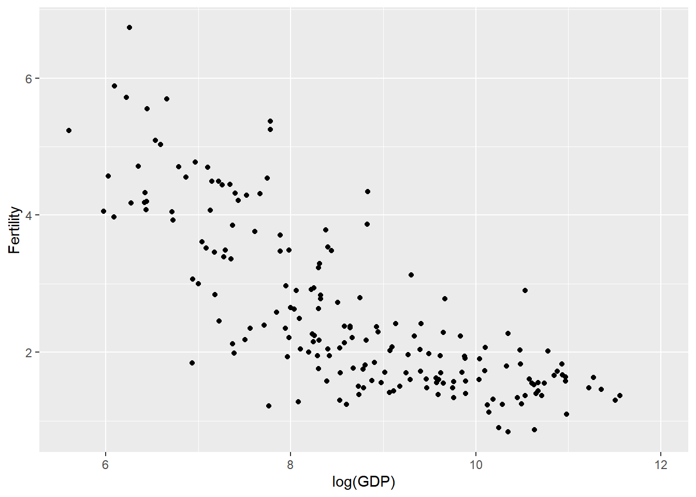
Include size of population
df_gdp %>% filter(year==2020) %>%
ggplot()+aes(x=log(GDP), Fertility, size=population, color=iso3c)+geom_point()+
scale_x_log10()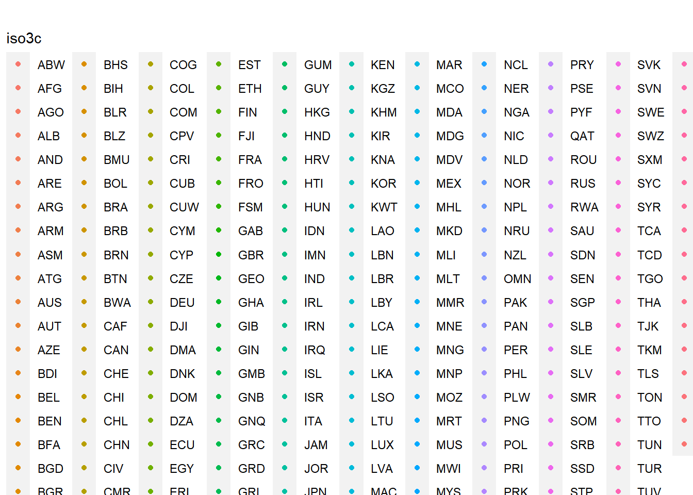
Some further refinement and labeling
df_gdp %>% filter(year==2020) %>%
ggplot()+aes(x=log(GDP), Fertility, size=population, color=iso3c)+geom_point(show.legend = FALSE)+
scale_x_log10()+
labs(x="GDP per capita (constant 2015 USD)", #add x axis title
y="Fertility rate, total (births per woman)") #add y axis title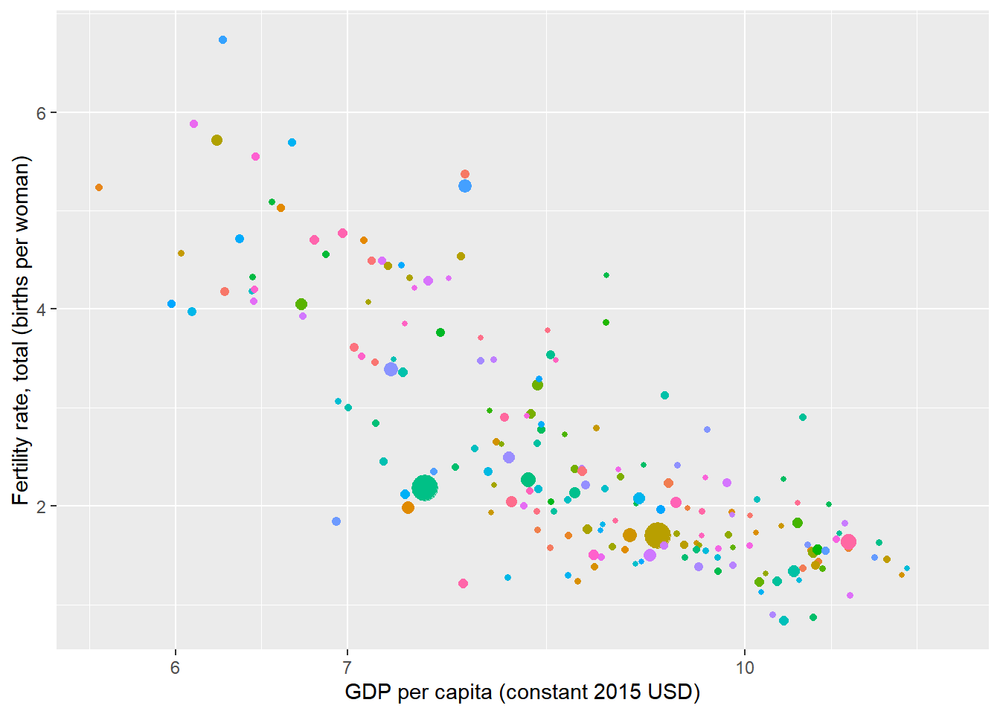
df_gdp %>%
ggplot()+aes(x=log(GDP), Fertility, size=population, color=iso3c)+geom_point(show.legend = FALSE)+
scale_x_log10()+
labs(x="GDP per capita (constant 2015 USD)", #add x axis title
y="Fertility rate, total (births per woman)") #add y axis title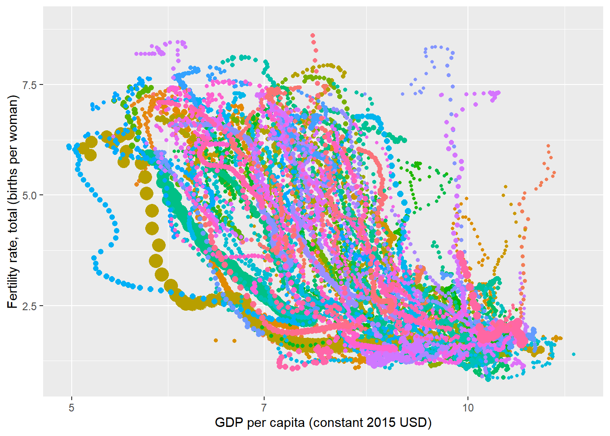
Animated graphs
#install.packages('gifski')
library("gifski")
#install.packages('tweenr')
library("tweenr")
library(gganimate)
library(png)animated_ggplot<-df_gdp %>%
ggplot()+aes(x=log(GDP), Fertility, size=population, color=iso3c)+geom_point(show.legend = FALSE)+
scale_x_log10()+
labs(x="GDP per capita (constant 2015 USD)", #add x axis title
y="Fertility rate, total (births per woman)") +
transition_time(year)
animated_ggplot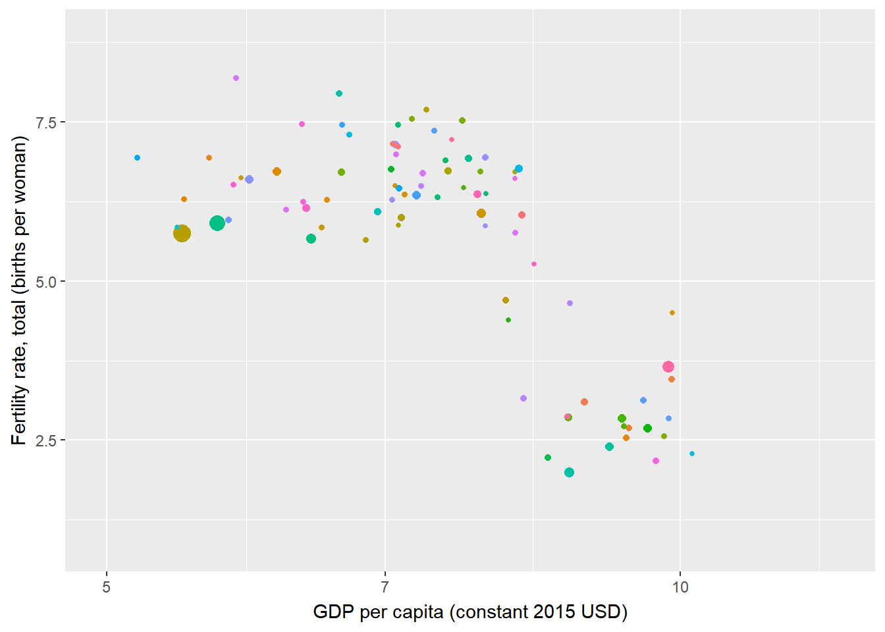
anim_save("animated_ggplot.gif")We can add a title (Year) to the graph by specifying in labs - title=“Year: {frame_time}”:
animated_ggplot2<-df_gdp %>%
ggplot()+aes(x=log(GDP), Fertility, size=population, color=iso3c)+geom_point(show.legend = FALSE)+
scale_x_log10()+
labs(x="GDP per capita (constant 2015 USD)", #add x axis title
y="Fertility rate, total (births per woman)", title = "Year:{frame_time}") +
transition_time(year)
animated_ggplot2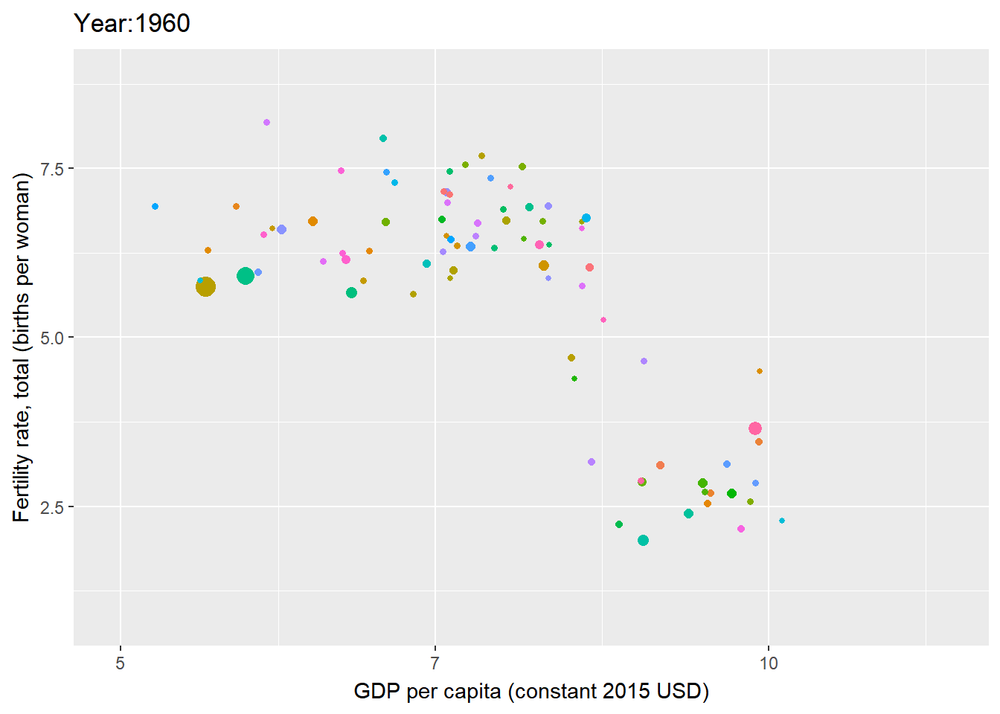
anim_save("animated_ggplot2.gif")To make it go slower
animate(animated_ggplot2, nframes=350, fps=20) # to make it go slower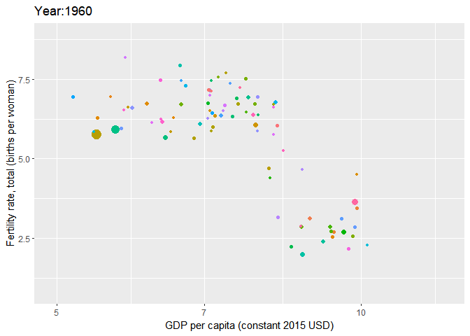
Regions as the color variable
animated_ggplot3<-df_gdp %>%
ggplot()+aes(x=log(GDP), Fertility, size=population, color=region)+geom_point(show.legend = FALSE)+
scale_x_log10()+
labs(x="GDP per capita (constant 2015 USD)", #add x axis title
y="Fertility rate, total (births per woman)", title = "Year:{frame_time}") +
transition_time(year)
animated_ggplot3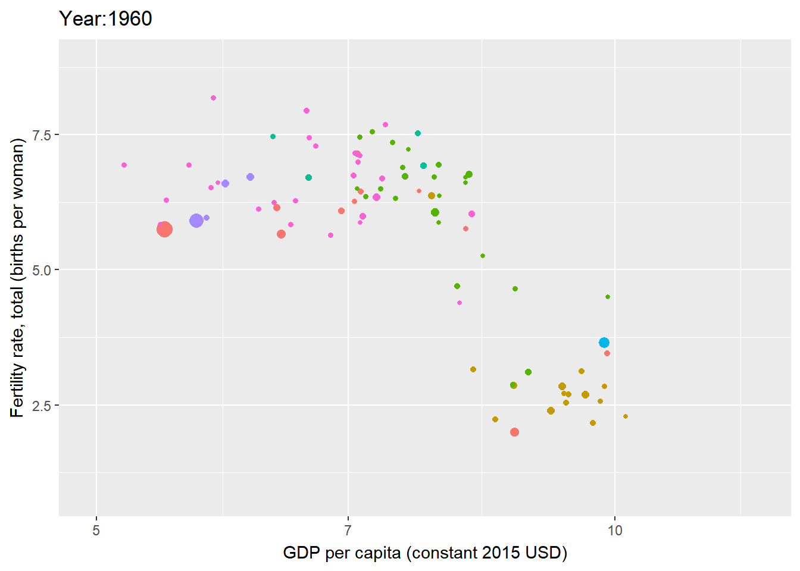
anim_save("animated_ggplot3.gif")South Asia : Major Economies
animated_ggplot_sa<-df_gdp %>% filter(iso3c %in%c("BGD","IND","PAK","LKA")) %>%
ggplot()+aes(x=log(GDP), Fertility, size=population, color=iso3c)+geom_point()+
scale_x_log10()+
labs(x="GDP per capita (constant 2015 USD)", #add x axis title
y="Fertility rate, total (births per woman)", title = "Year:{frame_time}") +
transition_time(year)
animated_ggplot_sa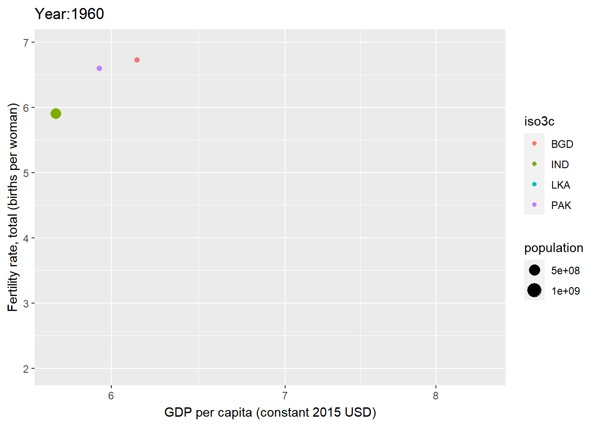
anim_save("animated_ggplot_sa.gif")animate(animated_ggplot_sa, nframes=350, fps=20) # to make it go slower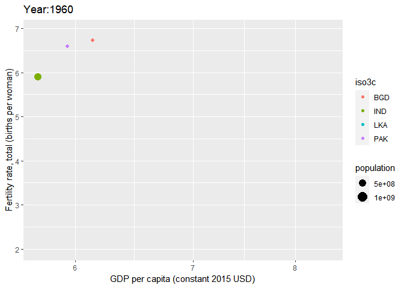